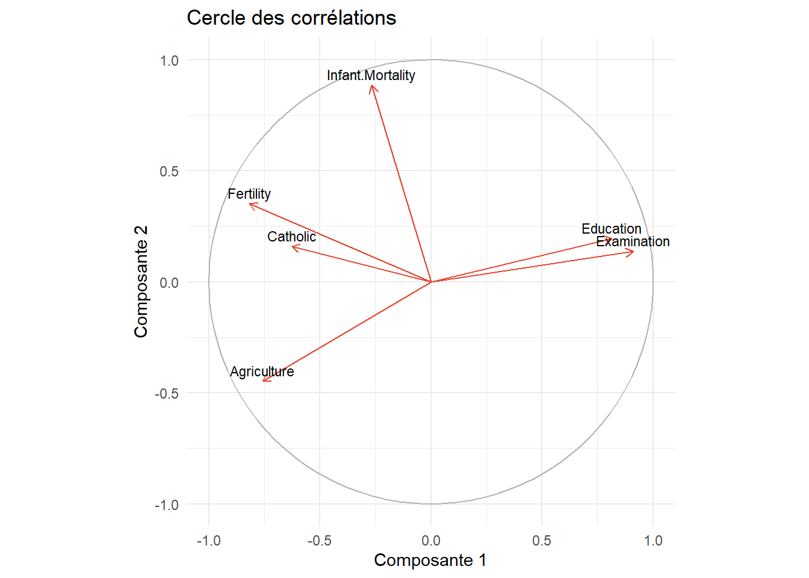

| Pays | PIB | Chomage | Inflation | Dette | Gini |
|---|---|---|---|---|---|
| France | 52890 | 7.6 | 1.5 | 112 | 30.0 |
| Allemagne | 65300 | 5.9 | 1.9 | 63 | 29.5 |
| États-Unis | 86000 | 4.2 | 2.9 | 124 | 41.8 |
| Japon | 34000 | 2.5 | 2.5 | 206 | 32.9 |
| Brésil | 10500 | 7.0 | 4.5 | 87 | 52.0 |
| Norvège | 95000 | 3.5 | 3.0 | 29 | 27.7 |
Analyse en Composantes Principales (ACP)
statistiques
analyse de données
ACP
Cours complet sur l’ACP : nuage de points pesants, inertie, théorème de Huygens, résolution du problème, indicateurs de qualité, exemple appliqué en R.
Pourquoi l’ACP est une idée intéressante ?
Prenons un jeu de données décrivant plusieurs pays selon leur PIB par habitant, leur taux de chômage, l’inflation, la dette publique et l’indice de Gini. Les données sont en 5 dimensions, et nous ne sommes capables d’en visualiser que 3 au mieux. Comment, dans ce cas, identifier des tendances ou des groupes ?
C’est précisément le problème que l’ACP se propose de résoudre.
1. Introduction des concepts utiles
Avant de commencer à introduire les concepts, il est important de savoir ce qu’on cherche à faire quand on fait une ACP. L’ACP prend un nuage de points en \(N\) dimensions et le projette sur les \(p\) dimensions (N > p) qui “résument” le plus d’informations possibles. Que veut dire “résume”? Comment trouver ces dimensions et effectuer la projection? C’est l’objet de ce cours.
Note de l’auteur
Quand j’ai étudié l’ACP pour la première fois, l’idée de l’ACP et ce vers quoi tendent toutes ces maths n’était malheureusement mentionnée que très tardivement dans le cours, ce qui a fait d’un cours qui est en tout point passionant, un des pires souvenirs de mon école d’ingénieur. Ce cours est une tentative de faire le cours que j’aurais aimé avoir à l’époque. J’espère qu’il aidera, et à défaut il est un bon rappel pour moi de tout le chemin parcouru depuis.
Nous commençons donc avec un jeu de données quelconque. Formellement un jeu de données est composé d’un nuage de points pesant et d’une métrique.
ImportantDéfinition 1 - Nuage de points pesants
On appelle nuage de points pesants un ensemble \((x_{1}, \dots, x_{n})\) de \(n\) points de \(\mathbb{R}^p\) où chaque observation \(x_{i}\) est décrite par \(p\) variables continues et est munie d’un poids \(p_{i} > 0\) avec \(\sum_{i=1}^n p_i =1\). Le nuage de points pesants \(N\) est
\[N = \{(x_{i}, p_{i}): i =1,...,n\}\]
Avec :
- \(x_i \in \mathbb{R}^p\) : une observation décrite par \(p\) variables
- \(p_i > 0\) : le poids de l’observation \(i\), avec \(\sum_{i=1}^n p_i = 1\)
Pourquoi mettre des poids sur les observations ?
Il est courant en statistique de vouloir pondérer ses observations pour mieux refléter la réalité statistique du monde. Par exemple, si l’on relève 2 observations pour un secteur économique qui représente 60% de l’activité d’une région et 7 observations pour un secteur qui représente 10% de l’activité économique de cette même région. Il est alors naturel de vouloir surpondérer les premières observations et sous-pondérer les deuxièmes quand l’on souhaite produire des mesures de l’activité économique de cette région. C’est là le rôle du poids de nos observations.
Les matrices \(D\) et \(X\)
Pour décrire un nuage de points pesants, on utilise les deux matrices suivantes:
- \(D \in \mathbb{R}^{n \times n}\) est la matrice décrivant les poids des observations. D est une matrice diagonale telle que l’élément (i,j) est
\[D_{ij} = \begin{cases} p_i & \text{si } i=j, \\ 0 & \text{sinon} \end{cases}\]
- \(X \in \mathbb{R}^{n \times p}\) est la matrice décrivant les \(n\) observations par \(p\) variables continues, telle que l’élément \((i,j)\) est la variable \(j\) pour l’observation \(i\).
Exemple
\(D\) est la matrice diagonale \(n \times n\) des poids, et \(X\) la matrice \(n \times p\) des données
\[D = \begin{bmatrix} 0.4 & 0 & 0 \\ 0 & 0.3 & 0 \\ 0 & 0 & 0.3 \end{bmatrix} \qquad X = \begin{bmatrix} 2 & 3 \\ 1 & 5 \\ 4 & 2 \end{bmatrix}\]
On a maintenant un nuage de points (des observations) et une pondération. Mais en analyse de données, les données sont définies par le triplet (X, D, M)
ImportantDéfinition 2 - Le triplet \((X, D, M)\)
- \(X\) : matrice des données (\(n \times p\))
- \(D\) : matrice de poids (diagonale, \(\sum p_i = 1\))
- \(M\) : métrique : matrice \(p \times p\), symétrique définie positive, qui définit les distances entre observations
Il nous faut donc rajouter une métrique pour avoir une notion de distance valable dans plusieurs dimensions.
C’est quoi une métrique ?
Quand on a p variables (disons: PIB, chômage, inflation), et nous voulons mesurer la distance entre les deux individus \(x_{i}\) et \(x_{j}\). La formule générale de distance est:
\[d_{M}^2(x_{i}, x_{j}) = (x_{i} - x_{j})^\top M (x_{i}-x_{j})\]
Le choix de M (la métrique) change complètement la notion de “distance”.
Cas 1: \(M = I_{p}\) (métrique euclidienne)
Ici, chaque variable contribue à la distance avec le même poids. SAUF QUE, si une variable a une échelle plus grande qu’une autre (par exemple le PIB en dizaine de milliers de millions et l’inflation, en point de pourcentage), elle va écraser les autres dans le calcul de la distance. Une petite variation de PIB pèse beaucoup plus qu’une grosse variation d’inflation, simplement parce que l’échelle numérique est plus grande, pas parce que c’est réellement plus important. C’est la raison pour laquelle on utilise la métrique normalisée
Cas 2: \(M = \text{diag}(1/s_1^2, \dots, 1/s_p^2)\) (métrique normalisée)
Pour corriger ce problème, on prend:
\[M = diag(\frac{1}{s_{1}^2}, ..., \frac{1}{s_{p}^2})\]
où \(s_{j}^2\) est la variance empirique de la variable j. Concrètement, cela revient à diviser chaque écart \(x_{i} - x_{j}\) par \(s_{j}^2\) avant de le mettre au carré. Une variable très dispersée (grande variance comme le PIB) est “rétrécie”, une variable peu dispersée (comme l’inflation) est “dilatée”.
Remarque : c’est ce que fait la fonction scale() en R.
TipExemple : effet de la normalisation
Prenons 3 individus décrits par 2 variables (PIB, chômage) :
\[X = \begin{bmatrix} 50000 & 7 \\ 30000 & 5 \\ 80000 & 3 \end{bmatrix}\]
On compare l’individu 1 \((50000, 7)\) et l’individu 2 \((30000, 5)\), d’écart \(x_1 - x_2 = (20000,\ 2)\).
Variances empiriques :
\[s_{\text{PIB}}^2 \approx 422\,222\,222 \qquad s_{\text{chômage}}^2 \approx 2{,}667\]
Sans normalisation (\(M = I_p\)) :
\[d^2 = 20000^2 + 2^2 = 400\,000\,000 + 4 = 400\,000\,004\]
La contribution du chômage (4) est totalement écrasée par celle du PIB (400 000 000), alors qu’une différence de 2 points de chômage est loin d’être négligeable économiquement.
Avec normalisation (\(M = \text{diag}(1/s_{\text{PIB}}^2,\ 1/s_{\text{chômage}}^2)\)) :
\[d^2 = \frac{20000^2}{422\,222\,222} + \frac{2^2}{2{,}667} = 0{,}947 + 1{,}500 = 2{,}447\]
Les deux variables contribuent maintenant dans un ordre de grandeur comparable.
Propriété clé : les distances calculées sur les données brutes avec la métrique \(D_{1/s}\) sont identiques aux distances calculées sur les données réduites (centrées-réduites) avec la métrique identité. Normaliser une variable ou changer de métrique, c’est donc la même opération.
\[d_{D_{1/s^2}}^2(x_{1}, x_{2}) = (x_{1} - x_{2})^\top D_{1/s^2}(x_{1}-x_{2}) \\ = [D_{1/s}(x_{1}-x_{2})]^\top[D_{1/s}(x_{1}-x_{2})] \\ = (x_{1}^* - x_{2}^*)^\top(x_{1}^*-x_{2}^*) \\ = d_{I_{p}^2}(x_{1}^*, x_{2}^*)\]
1.1. Inertie
Maintenant qu’on a une notion de distance, on peut s’intéresser à l’inertie de notre nuage. L’inertie du nuage par rapport à un point est la mesure de la dispersion du nuage autour de ce point.
ImportantDéfinition 3 — Inertie par rapport à un point
L’inertie de \(N\) par rapport à un point \(a \in \mathbb{R}^p\) est
\[I_a = \sum_{i=1}^n p_i\, d_M^2(a, x_i)\]
Quel point minimise l’inertie ?
Une question naturelle se pose : parmi tous les points \(a \in \mathbb{R}^p\), lequel rend la dispersion du nuage \(I_a\) la plus petite possible (en somme, le point le plus central du nuage) ? En développant \(I_a\) comme fonction de \(a\) :
\[I_a = \sum_{i=1}^n p_i (x_i - a)^\top M (x_i - a)\]
et en dérivant par rapport à \(a\) (avec \(M\) symétrique) :
\[\frac{\partial I_a}{\partial a} = -2 \sum_{i=1}^n p_i\, M(x_i - a)\]
On annule cette dérivée :
\[\sum_{i=1}^n p_i\, M(x_i - a) = 0 \quad\Longleftrightarrow\quad M\left(\sum_{i=1}^n p_i x_i - a\right) = 0\]
Comme \(M\) est symétrique définie positive (donc inversible), on obtient
\[a = \sum_{i=1}^n p_i x_i\]
Ce point particulier et indépendant du choix de la métrique \(M\), est celui qui minimise l’inertie. C’est précisément le centre de gravité du nuage.
ImportantDéfinition 4 — Centre de gravité
Le centre de gravité du nuage \(N\), noté \(g\), est un vecteur de \(\mathbb{R}^p\) donné par la relation
\[g = \sum_{i=1}^n p_i x_i = (g_1, \dots, g_p)^\top\]
Le nuage centré est alors la matrice dont l’élément \((i,j)\) est \(x_{ij} - g_j\).
L’inertie de \(N\) par rapport au centre de gravité \(g\) joue un rôle essentiel dans les méthodes factorielles. On la note
\[I := I_g = \sum_{i=1}^n p_i\, d_M^2(g, x_i)\]
Maintenant qu’on sait que \(I_{g}\) est l’inertie minimale du nuage de points, le théorème suivant paraît naturel.
1.2. Théorème de Huygens
WarningThéorème 1 — Huygens par rapport à un point
\[\forall a \in \mathbb{R}^p, \qquad I_a = I_g + d_M^2(a, g)\]
CautionPreuve du Théorème 1
Pour tout \(a \in \mathbb{R}^p\), on décompose \(x_i - a = (x_i - g) + (g - a)\) :
\[I_a = \sum_{i=1}^n p_i \big[(x_i-g) + (g-a)\big]^\top M \big[(x_i-g) + (g-a)\big]\]
En développant ce produit :
\[I_a = \underbrace{\sum_{i=1}^n p_i (x_i-g)^\top M (x_i-g)}_{=\ I_g} + 2(g-a)^\top M \underbrace{\sum_{i=1}^n p_i (x_i - g)}_{=\ 0} + \underbrace{\sum_{i=1}^n p_i}_{=\ 1} (g-a)^\top M (g-a)\]
Le terme croisé s’annule car \(\sum_i p_i (x_i - g) = \sum_i p_i x_i - g \sum_i p_i = g - g = 0\) (en utilisant \(\sum_i p_i = 1\) et la définition de \(g\)). Il reste :
\[I_a = I_g + (g-a)^\top M (g-a) = I_g + d_M^2(a, g)\]
\(\blacksquare\)
Comme \(d_M^2(a,g) \geq 0\) pour tout \(a\), ce théorème confirme directement le résultat de la section précédente : \(I_a \geq I_g\), avec égalité si et seulement si \(a = g\). Le centre de gravité est donc bien l’unique point qui minimise l’inertie.
Inertie par rapport à un sous-espace affine
On vient de voir que le centre de gravité \(g\) est le point qui minimise l’inertie du nuage. Mais s’arrêter à un point ne nous avance pas beaucoup : projeter toutes nos observations sur un seul point \(g\) revient à effacer complètement l’information qui nous intéresse, à savoir la façon dont les observations varient les unes par rapport aux autres. Un point n’a pas de direction, pas d’étendue : il ne peut rien nous apprendre sur la structure du nuage.
Ce qui est réellement utile, en revanche, c’est de projeter le nuage sur un sous-espace de dimension plus grande qu’un simple point, une droite ou un plan par exemple, car cela permet de préserver une partie de la variabilité des données tout en la représentant dans un espace plus simple. Le problème change donc de nature : il ne s’agit plus de trouver le meilleur point pour résumer le nuage, mais de trouver le meilleur sous-espace. Et comme un point n’est jamais qu’un sous-espace affine de dimension 0, il est naturel de se demander si le résultat obtenu pour un point (le fait que \(g\) minimise l’inertie) se généralise à des sous-espaces de dimension quelconque. C’est précisément ce que va établir la version du théorème de Huygens pour un sous-espace affine.
ImportantDéfinition 5 — Inertie par rapport à un sous-espace affine
L’inertie de \(N\) par rapport à un sous-espace affine \(F\) est
\[I_F = \sum_{i=1}^n p_i\, d_M^2(F, x_i)\]
Ici, \(d_M^2(F, x_i)\) mesure la distance entre l’observation \(x_i\) et sa projection sur \(F\) : c’est l’information qu’on perd en résumant \(x_i\) par sa version projetée sur \(F\). L’inertie \(I_F\) additionne ces pertes sur toutes les observations, pondérées par leur poids \(p_i\), c’est donc une mesure globale de la perte d’information quand on remplace le nuage \(N\) par sa projection sur \(F\).
C’est ce point qui est essentiel pour la suite : si on cherche maintenant à minimiser \(I_F\), ce n’est pas un choix arbitraire ou un exercice mathématique gratuit. C’est précisément parce que \(I_F\) mesure la perte d’information causée par la projection sur \(F\) que la minimiser revient à choisir, parmi tous les sous-espaces possibles, celui qui déforme le moins les données originales. Autrement dit, on commence ici à formuler le véritable problème de l’ACP : trouver le sous-espace qui capture le mieux le nuage \(N\), ce qui, traduit mathématiquement, signifie trouver le sous-espace qui minimise l’inertie perdue \(I_F\).
Le théorème de Huygens pour un sous-espace affine généralise celui vu pour un point : il montre que, parmi tous les sous-espaces affines parallèles à une direction donnée, celui qui passe par le centre de gravité \(g\) est celui qui minimise l’inertie perdue.
WarningThéorème 2 — Huygens par rapport à un sous-espace affine
Pour tout sous-espace affine \(F\) de \(\mathbb{R}^p\) :
\[I_F = I_{F_g} + d_M^2(a, g)\]
où \(F_g\) est le sous-espace affine parallèle à \(F\) passant par \(g\), et \(a\) est la projection \(M\)-orthogonale de \(g\) sur \(F\).
Comment lire ce théorème. Il dit que l’inertie totale \(I_F\) se décompose en deux morceaux :
- \(I_{F_g}\) : l’inertie “intrinsèque”, celle qu’on aurait de toute façon avec la meilleure version possible de ce sous-espace (celle qui passe par \(g\)), c’est la partie qu’on ne peut pas réduire.
- \(d_M^2(a, g)\) : un terme qui dépend uniquement de où se situe \(F\) par rapport à \(g\) : plus \(F\) est loin du centre de gravité, plus ce terme est grand.
Pourquoi c’est important. Comme \(d_M^2(a,g) \geq 0\), on a toujours \(I_F \geq I_{F_g}\), avec égalité si et seulement si \(F\) passe par \(g\) (c’est-à-dire \(F = F_g\)). Ainsi, le sous-espace affine parallèle à \(F\) d’inertie minimale est \(F_g\), celui qui passe par le centre de gravité.
L’ACP, comme on l’expliquera plus loin, est une méthode qui cherche le “meilleur” sous espace dans lequel projeter des données en gardant l’essentiel de l’information. Ce résultat, c’est exactement le résultat dont l’ACP a besoin : au lieu de chercher, pour chaque direction possible, le meilleur sous-espace parmi tous les sous-espaces affines parallèles à cette direction (une infinité de candidats), on sait déjà que le meilleur passe forcément par \(g\). Le problème se réduit donc à chercher uniquement la bonne direction, ce qui déplace le problème des sous-espaces affines ou sous-espaces vectoriels.
CautionPreuve du Théorème 2
Cette preuve reprend le même schéma que celle du théorème de Huygens par rapport à un point : on décompose, on développe un carré, et un terme croisé s’annule grâce à une propriété du centre de gravité. La différence, ici, est qu’on travaille avec des résidus vectoriels par rapport à un sous-espace plutôt qu’avec de simples différences de points.
Pour chaque observation \(x_i\), on la décompose de deux façons. Par rapport à \(F\), on écrit \(x_i = x_{i1} + x_{i2}\), où \(x_{i1} \in F\) est la projection de \(x_i\) sur \(F\) et \(x_{i2} \in F^\perp\) le résidu orthogonal, c’est-à-dire ce qui reste après avoir projeté \(x_i\) sur \(F\). Par rapport à \(F_g\), on écrit de la même manière \(x_i = \tilde x_{i1} + \tilde x_{i2}\) avec \(\tilde x_{i1} \in F_g\) et \(\tilde x_{i2} \in F_g^\perp\).
Comme \(F_g\) est le sous-espace parallèle à \(F\) passant par \(g\), les deux sous-espaces ont la même direction, donc le même espace orthogonal : \(F^\perp = F_g^\perp\). Il en résulte que le vecteur \(b = x_{i2} - \tilde x_{i2}\) ne dépend pas de \(i\), mais est un unique vecteur fixe pour toutes les observations. Intuitivement, translater un sous-espace affine d’un vecteur fixe translate le résidu orthogonal de chaque point de ce même vecteur fixe, quelle que soit l’observation considérée.
On utilise maintenant la définition du centre de gravité pour identifier ce vecteur \(b\). En injectant la décomposition par rapport à \(F_g\) dans \(g = \sum_{i=1}^n p_i x_i\), on obtient
\[g = \sum_{i=1}^n p_i \tilde x_{i1} + \sum_{i=1}^n p_i (x_{i2} - b).\]
Or \(g\) appartient à \(F_g\) par construction, et \(\sum_{i=1}^n p_i \tilde x_{i1}\) appartient également à \(F_g\), puisqu’une moyenne pondérée de points d’un sous-espace affine reste dans ce sous-espace dès lors que les poids somment à 1. En soustrayant, le second terme \(\sum_{i=1}^n p_i(x_{i2}-b)\) doit donc appartenir à la direction de \(F_g\). Mais chaque terme \(x_{i2}-b\) appartient à \(F^\perp\), donc leur somme pondérée aussi. Un vecteur appartenant à la fois à la direction de \(F_g\) et à son orthogonal ne peut être que le vecteur nul, d’où
\[\sum_{i=1}^n p_i(x_{i2}-b) = 0.\]
Cette égalité entraîne deux conséquences essentielles pour la suite de la preuve. D’une part, \(b = \sum_{i=1}^n p_i x_{i2}\), puisque \(\sum_{i=1}^n p_i = 1\). D’autre part, le point \(a := \sum_{i=1}^n p_i \tilde x_{i1}\) s’identifie précisément à la projection \(M\)-orthogonale de \(g\) sur \(F\).
On peut à présent calculer \(I_F\) à partir de sa définition, en développant complètement le carré. Comme la distance de \(x_i\) à \(F\) est exactement la norme de son résidu orthogonal \(x_{i2}\), on a
\[ \begin{aligned} I_F &= \sum_{i=1}^n p_i\, d_M^2(F, x_i) \\ &= \sum_{i=1}^n p_i \|x_{i2}\|_M^2 \\ &= \sum_{i=1}^n p_i (x_{i2} - b + b)^\top M (x_{i2} - b + b) \\ &= \sum_{i=1}^n p_i (x_{i2}-b)^\top M (x_{i2}-b) + \sum_{i=1}^n p_i\, b^\top M b + 2\sum_{i=1}^n p_i (x_{i2}-b)^\top M b \\ &= \sum_{i=1}^n p_i\, \tilde x_{i2}^\top M \tilde x_{i2} + \sum_{i=1}^n p_i (g-a)^\top M (g-a) + 2\sum_{i=1}^n p_i (x_{i2}-b)^\top M b \end{aligned} \]
La preuve se termine en remarquant les trois faits suivants. D’abord, \(I_{F_g} = \sum_{i=1}^n p_i\, \tilde x_{i2}^\top M \tilde x_{i2}\), ce terme étant par définition l’inertie du nuage par rapport à \(F_g\). Ensuite, \(d_M^2(a,g) = \sum_{i=1}^n p_i (g-a)^\top M (g-a)\), puisque \(b = g - a\) et que ce terme ne dépend pas de \(i\). Enfin, \(\sum_{i=1}^n p_i (x_{i2}-b)^\top M b = 0\), car \(b = \sum_{i=1}^n p_i x_{i2}\), ce qui annule exactement le terme croisé.
On obtient donc
\[I_F = I_{F_g} + d_M^2(a,g),\]
ce qui achève la preuve. \(\blacksquare\)
Le théorème de Huygens nous a beaucoup aidé, maintenant on connait la position de notre plan : \(g\). Mais il nous reste un problème d’importance, la direction. Comment évaluer si une direction E est bonne? Le critère de l’ACP est de minimiser l’inertie perdue. Le problème, c’est que cette quantité est difficile à manipuler. C’est là qu’intervient notre premier lemme.
NoteLemme 1
Soit \(E\) un sous-espace vectoriel de \(\mathbb{R}^p\) tel que \(\mathbb{R}^p = E \oplus E^\perp\), on a
\[I = I_E + I_{E^\perp}.\]
CautionPreuve du Lemme 1
Pour tout point \(x_i \in \mathbb{R}^p\), on peut écrire \(x_i = x_{i1} + x_{i2}\), où \(x_{i1} \in E\) et \(x_{i2} \in E^\perp\), cette décomposition étant unique puisque \(\mathbb{R}^p = E \oplus E^\perp\).
En partant de la définition de l’inertie totale et en développant complètement le carré, on obtient
\[ \begin{aligned} I &= \sum_{i=1}^n p_i\, d_M^2(x_i, g) \\ &= \sum_{i=1}^n p_i (x_i - g)^\top M (x_i - g) \\ &= \sum_{i=1}^n p_i (x_{i1} + x_{i2} - g)^\top M (x_{i1} + x_{i2} - g) \\ &= \sum_{i=1}^n p_i\, x_{i1}^\top M x_{i1} + \sum_{i=1}^n p_i\, x_{i2}^\top M x_{i2} + 2\sum_{i=1}^n p_i\, x_{i2}^\top M x_{i1} - 2\sum_{i=1}^n p_i (x_{i1}+x_{i2})^\top M g + g^\top M g \end{aligned} \]
La preuve se termine en observant deux faits. D’une part, \(x_{i1}^\top M x_{i2} = 0\) pour tout \(i\), puisque \(x_{i1} \in E\) et \(x_{i2} \in E^\perp\), ce qui annule le terme croisé \(2\sum_{i=1}^n p_i\, x_{i2}^\top M x_{i1}\). D’autre part, en travaillant sur le nuage centré, on a \(g = 0\), ce qui annule à la fois le terme \(-2\sum_{i=1}^n p_i (x_{i1}+x_{i2})^\top M g\) et le terme \(g^\top M g\).
Il reste donc
\[I = \sum_{i=1}^n p_i\, x_{i1}^\top M x_{i1} + \sum_{i=1}^n p_i\, x_{i2}^\top M x_{i2} = I_E + I_{E^\perp}.\]
\(\blacksquare\)
NoteLemme 2
Soit \(V = X^\top D X = \sum_{i=1}^n p_i x_i x_i^\top\) la matrice de variances-covariances. On a l’expression matricielle suivante de l’inertie totale :
\[I = \text{tr}(VM).\]
CautionPreuve du Lemme 2
En rappelant que \(g = 0\) (le nuage étant centré), on part de la définition de l’inertie totale et on utilise le fait qu’un scalaire est égal à sa propre trace :
\[ \begin{aligned} I &= \sum_{i=1}^n p_i\, d_M^2(0, x_i) \\ &= \sum_{i=1}^n p_i\, x_i^\top M x_i \\ &= \text{tr}\left(\sum_{i=1}^n p_i\, x_i^\top M x_i\right) \end{aligned} \]
Par la propriété de commutativité cyclique de la trace, on peut réécrire chaque terme \(x_i^\top M x_i\) sous la forme \(M x_i x_i^\top\) à l’intérieur de la trace, c’est-à-dire \(\text{tr}\left(\sum_{i=1}^n p_i\, x_i^\top M x_i\right) = \text{tr}\left(\sum_{i=1}^n p_i\, M x_i x_i^\top\right)\). En sortant \(M\) de la somme, puisqu’il ne dépend pas de \(i\), on obtient
\[ \begin{aligned} I &= \text{tr}\left(\sum_{i=1}^n p_i\, M x_i x_i^\top\right) \\ &= \text{tr}\left(M \sum_{i=1}^n p_i\, x_i x_i^\top\right) \\ &= \text{tr}(MV) \\ &= \text{tr}(VM) \end{aligned} \]
la dernière égalité découlant à nouveau de la commutativité cyclique de la trace, \(\text{tr}(MV) = \text{tr}(VM)\). \(\blacksquare\)
L’inertie totale étant reliée à la matrice de variances-covariances (voir Lemme 1.2.2), on s’intéresse maintenant au lien entre cette matrice et l’inertie expliquée par un axe.
NoteLemme 3
Soit \(\Delta_u\) un axe passant par \(g = 0\) de vecteur unitaire \(u\). On a
\[I_{\Delta_u^\perp} = u^\top M V M u.\]
CautionPreuve du Lemme 3
Par la définition de l’inertie, on a
\[I_{\Delta_u^\perp} = \sum_{i=1}^n p_i\, d_M^2(x_i, \Delta_u^\perp).\]
Soit \(v \in \Delta_u\) et \(\alpha\) l’angle entre \(v\) et \(x_i\), on a
\[\cos(\alpha) = \frac{x_i^\top M v}{\|x_i\|_M \|v\|_M}.\]
Ainsi,
\[ \begin{aligned} d_M^2(x_i, \Delta_u^\perp) &= \cos^2(\alpha)\, \|x_i\|_M^2 \\ &= \frac{(x_i^\top M v)^2}{\|v\|_M^2} \\ &= \left(\frac{x_i^\top M v}{\|v\|_M}\right)^2 \end{aligned} \]
En considérant le vecteur unitaire \(u = \dfrac{v}{\|v\|_M}\), on a
\[d_M^2(x_i, \Delta_u^\perp) = (x_i^\top M u)^2.\]
Ainsi,
\[ \begin{aligned} I_{\Delta_u^\perp} &= \sum_{i=1}^n p_i (x_i^\top M u)^2 \\ &= \sum_{i=1}^n p_i\, u^\top M x_i x_i^\top M u \\ &= u^\top M \left(\sum_{i=1}^n p_i x_i x_i^\top\right) M u \\ &= u^\top M V M u. \end{aligned} \]
\(\blacksquare\)
2. L’Analyse en Composantes Principales
Le travail préliminaire sur les concepts nous permet maintenant de transformer l’ACP en un problème d’algèbre linéaire que l’on peut espérer résoudre.
Formulation du problème
Il faut trouver le sous-espace affine \(E_{k}\) de dimension k (avec k < p le nombre total de dimensions) tel que \(I_{E_{k}}\) l’inertie du nuage N par rapport à \(E_{k}\) soit minimale avec:
\[ I_{E_{k}} = \sum_{i=1}^n p_{i}d_{M}^2 (x_{i}, E_{k}) \]
De plus, on a
\[I = I_{E_k} + I_{E_k^\perp} = \text{constante}.\]
L’inertie totale du nuage étant fixe, minimiser \(I_{E_k}\) est donc équivalent à maximiser \(I_{E_k^\perp}\) :
\[ \begin{aligned} \underset{E_k}{\operatorname{argmin}}\ I_{E_k} &= \underset{E_k}{\operatorname{argmin}}\ \left(I - I_{E_k^\perp}\right)\\ &= \underset{E_k}{\operatorname{argmax}}\ I_{E_k^\perp} \end{aligned} \]
ImportantDéfinition 6 — Sous-espace optimal
On dit que \(E_k\) est un sous-espace optimal de dimension \(k\) si l’inertie expliquée par \(E_k\) maximise l’inertie expliquée par n’importe quel sous-espace vectoriel de dimension \(k\). Ainsi, soit \(\mathcal{F}_k\) l’ensemble des sous-espaces vectoriels de dimension \(k\), on a pour tout \(F_k \in \mathcal{F}_k\)
\[I_{E_k^\perp} \geq I_{F_k^\perp}.\]
2.1 Résultats préalables
Les deux lemmes suivants montrent que la résolution du problème peut se faire séquentiellement pour \(k = 1, \dots, p-1\), et que les résultats obtenus pour le sous-espace \(E_k\) seront utiles pour construire \(E_{k+1}\).
NoteLemme 4
Si \(E_{k-1}\) est un sous-espace vectoriel optimal de dimension \(k-1\), alors le sous-espace vectoriel optimal de dimension \(k\), \(E_k\), contient \(E_{k-1}\).
CautionPreuve du Lemme 4
Soit \(F_k\) un sous-espace de dimension \(k\). On a
\[\dim(F_k) = k \qquad \text{et} \qquad \dim(E_{k-1}^\perp) = p-k+1.\]
Ainsi \(\dim(F_k) + \dim(E_{k-1}^\perp) = p+1 > p\). Par ailleurs,
\[\dim(E_{k-1}^\perp \cup F_k) = \dim(E_{k-1}^\perp) + \dim(F_k) - \dim(E_{k-1}^\perp \cap F_k).\]
En notant que \(E_{k-1}^\perp \cup F_k \subseteq \mathbb{R}^p\), on a \(\dim(E_{k-1}^\perp \cup F_k) \leq p\), et donc \(\dim(E_{k-1}^\perp \cap F_k) > 0\). On conclut que \(E_{k-1}^\perp \cap F_k \neq \emptyset\).
On peut alors considérer un vecteur \(u \in E_{k-1}^\perp \cap F_k\), \(u \neq 0\). On note \(\Delta_u\) l’axe correspondant à \(u\). Soit \(G\) le sous-espace vectoriel supplémentaire \(M\)-orthogonal à \(\Delta_u\) dans \(F_k\) (c’est-à-dire \(F_k = G \oplus \Delta_u\)). Soit \(E_k = E_{k-1} \oplus \Delta_u\), on a alors
\[ \begin{cases} I_{F_k} = I_G + I_{\Delta_u} \\ I_{E_k} = I_{E_{k-1}} + I_{\Delta_u} \end{cases} \]
Comme \(E_{k-1}\) est optimal, on a \(I_G \geq I_{E_{k-1}}\). Ainsi, pour avoir \(F_k\) optimal, il faut \(E_{k-1} \subset F_k\). \(\blacksquare\)
NoteLemme 5
La recherche de \(E_k\) optimal contenant \(E_{k-1}\) optimal est équivalente à la recherche d’une droite vectorielle \(\Delta_u\) \(M\)-orthogonale à \(E_{k-1}\) et minimisant \(I_{\Delta_u}\).
CautionPreuve du Lemme 5
\(\forall E_k \supset E_{k-1}\), on a \(E_k = E_{k-1} \oplus \Delta_u\) avec \(\Delta_u \perp_M E_{k-1}\). Ainsi, comme \(I_{E_{k-1}}\) est minimale et
\[I_{E_k} = I_{E_{k-1}} + I_{\Delta_u},\]
\(I_{\Delta_u}\) doit être minimale. \(\blacksquare\)
Ce que ce lemme permet concrètement
Ce lemme dit que trouver le meilleur \(E_k\) revient à trouver le meilleur axe \(\Delta_u\) orthogonal à \(E_{k-1}\), un problème beaucoup plus simple à résoudre.
Mais il ne se suffit pas à lui-même : il s’agit d’une étape d’un processus récursif. On part de \(E_1\), trouvé directement (sans contrainte d’orthogonalité, cf. section 4), puis on applique le lemme pour construire \(E_2\) à partir de \(E_1\), \(E_3\) à partir de \(E_2\), et ainsi de suite jusqu’à \(E_{p-1}\). C’est cette construction axe par axe qui justifie la méthode de résolution par valeurs propres présentée ensuite.
2.2. Résolution du problème
Essayons maintenant de résoudre le problème de manière récursive. Ainsi, les premières étapes sont :
- Recherche d’un axe \(E_1 = \Delta_{u_1}\) maximisant \(I_{\Delta_{u_1}^\perp}\).
(Rappel: en français, cela veut dire qu’on cherche la meilleure direction possible dans le nuage de points, celle qui sépare le plus les individus entre eux.)
- Recherche d’un axe \(\Delta_{u_2}\) maximisant \(I_{\Delta_{u_2}^\perp}\) sous la contrainte que \(\Delta_{u_2} \perp_M E_1\) (ainsi \(E_2 = E_1 \oplus \Delta_{u_2}\)).
- Recherche d’un axe \(\Delta_{u_3}\) maximisant \(I_{\Delta_{u_3}^\perp}\) sous la contrainte que \(\Delta_{u_3} \perp_M E_2\) (ainsi \(E_3 = E_2 \oplus \Delta_{u_3}\)).
Ainsi, à l’étape \(k\) (avec \(k \leq p\)), on effectue la recherche d’un axe \(\Delta_{u_k}\) maximisant \(I_{\Delta_{u_k}^\perp}\) sous la contrainte que \(\Delta_{u_k} \perp_M E_{k-1}\) (ainsi \(E_k = E_{k-1} \oplus \Delta_{u_k}\)).
On regarde maintenant comment construire les axes \(\Delta_{u_1}\) et \(\Delta_{u_2}\). La construction des autres axes se fait de la même façon.
Obtention de \(\Delta_{u_1}\)
Soit \(u_1\) le vecteur directeur unitaire de \(\Delta_{u_1}\). On a donc le problème de maximisation sous contrainte suivant :
\[ \begin{cases} u_1 = \underset{u}{\operatorname{argmax}}\ u^\top MVMu \\ \text{s.c.}\ u^\top M u = 1 \end{cases} \]
Rappel : d’après le Lemme 3, l’inertie expliquée par un axe \(\Delta_u\) s’écrit \(I_{\Delta_u^\perp} = u^\top MVMu\). On cherche donc \(u_1\) qui maximise cette expression.
Il est aussi important de se rappeler que, pour une matrice \(A\) et un vecteur \(a\), on a \(\dfrac{\partial}{\partial u} u^\top A u = 2Au\) si \(A = A^\top\), et \(\dfrac{\partial}{\partial u} a^\top u = a\).
En utilisant la méthode des multiplicateurs de Lagrange, on a donc
\[\left.\frac{\partial}{\partial u}\left[u^\top MVMu - \lambda_1(u^\top M u - 1)\right]\right|_{u=u_1} = 0,\]
où \(\lambda_1\) est le multiplicateur de Lagrange. En notant qu’on a également
\[\left.\frac{\partial}{\partial \lambda}\left[u^\top MVMu - \lambda_1(u^\top M u - 1)\right]\right|_{u=u_1} = 0,\]
on obtient le système
\[ \begin{cases} MVMu_1 - \lambda_1 Mu_1 = 0 \\ u_1^\top M u_1 = 1 \end{cases} \quad\Longleftrightarrow\quad \begin{cases} VMu_1 = \lambda_1 u_1 \\ \|u_1\|_M = 1 \end{cases} \]
Donc \(u_1\) est vecteur propre de la matrice \(VM\) de valeur propre \(\lambda_1\). On a
\[ \begin{aligned} I_{\Delta_{u_1}^\perp} &= u_1^\top M (VMu_1) \\ &= u_1^\top M \lambda_1 u_1 \\ &= \lambda_1 \|u_1\|_M^2 \\ &= \lambda_1 \end{aligned} \]
TipIllustration en dimension 2
Pour rendre concret le résultat général vu précédemment (le maximum d’une forme quadratique sur la sphère unité est atteint exactement sur un vecteur propre, et vaut la valeur propre associée), on peut le vérifier explicitement en dimension 2, par un calcul direct indépendant de tout argument sur les vecteurs propres.
Soit \(S = \begin{bmatrix} a & b \\ b & c \end{bmatrix}\) une matrice symétrique, et considérons la forme quadratique associée
\[f(x_1, x_2) = (x_1, x_2)\, S \begin{pmatrix} x_1 \\ x_2 \end{pmatrix} = a x_1^2 + 2b x_1 x_2 + c x_2^2.\]
Cette expression définit une conique particulière. Si \(\det(S) = ac - b^2 \neq 0\), on obtient une ellipse lorsque \(\det(S) > 0\) et une hyperbole lorsque \(\det(S) < 0\) ; le cas \(\det(S) = 0\) correspond à une parabole ou à un cas dégénéré (droites sécantes, point, ensemble vide). C’est précisément cette image de l’ellipse, dont les axes sont donnés par les vecteurs propres de \(S\), qui a servi d’intuition plus haut dans le cours.
On s’intéresse ici au maximum et au minimum de \(f\) sur le cercle unité \(x_1^2 + x_2^2 = 1\), c’est-à-dire exactement le problème résolu en toute dimension par la méthode des multiplicateurs de Lagrange, mais qu’on va ici retrouver par un calcul direct.
Calcul direct (paramétrage trigonométrique)
Sur le cercle unité, on peut poser \(x_1 = \cos\theta\) et \(x_2 = \sin\theta\). La fonction à étudier devient
\[f(\theta) = a\cos^2\theta + 2b\cos\theta\sin\theta + c\sin^2\theta.\]
En utilisant \(\cos^2\theta = \dfrac{1+\cos(2\theta)}{2}\), \(\sin^2\theta = \dfrac{1-\cos(2\theta)}{2}\) et \(\cos\theta\sin\theta = \dfrac{\sin(2\theta)}{2}\), on obtient
\[f(\theta) = \frac{a+c}{2} + \frac{a-c}{2}\cos(2\theta) + b\sin(2\theta).\]
On regroupe les deux derniers termes sous la forme \(m\cos(2\theta - \alpha)\), avec
\[m = \sqrt{\left(\frac{a-c}{2}\right)^2 + b^2} \qquad \text{et} \qquad \alpha = \arctan\left(\frac{2b}{a-c}\right),\]
de sorte que
\[f(\theta) = \frac{a+c}{2} + m\cos(2\theta - \alpha).\]
Comme \(\cos\) varie entre \(-1\) et \(1\), on en déduit immédiatement les extrema de \(f\) :
\[\max_\theta f(\theta) = \frac{a+c}{2} + m, \qquad \operatorname{argmax}_\theta f = \frac{\alpha}{2}\ [\pi]\]
\[\min_\theta f(\theta) = \frac{a+c}{2} - m, \qquad \operatorname{argmin}_\theta f = \frac{\alpha}{2} + \frac{\pi}{2}\ [\pi]\]
Ce calcul ne fait intervenir aucune notion de valeur propre : c’est une optimisation trigonométrique élémentaire.
Vérification par les valeurs propres
Calculons maintenant les valeurs propres de \(S\), en remarquant d’abord que \(f(\theta) = (\cos\theta, \sin\theta)\, S \begin{pmatrix}\cos\theta \\ \sin\theta\end{pmatrix}\).
Le polynôme caractéristique de \(S\) est
\[P_S(\lambda) = \det\begin{pmatrix} a-\lambda & b \\ b & c-\lambda \end{pmatrix} = (a-\lambda)(c-\lambda) - b^2 = \lambda^2 - (a+c)\lambda + (ac - b^2).\]
Son discriminant vaut
\[\Delta = (a+c)^2 - 4(ac-b^2) = (a-c)^2 + 4b^2,\]
d’où les deux valeurs propres
\[\lambda_\pm = \frac{a+c \pm \sqrt{(a-c)^2 + 4b^2}}{2} = \frac{a+c}{2} \pm \sqrt{\left(\frac{a-c}{2}\right)^2 + b^2} = \frac{a+c}{2} \pm m.\]
On retrouve exactement les extrema calculés directement : \(\lambda_+ = \max_\theta f(\theta)\) et \(\lambda_- = \min_\theta f(\theta)\). Un calcul complémentaire montre que les sous-espaces propres associés sont
\[E_{\lambda_+} = \operatorname{Vect}\left(\cos\frac{\alpha}{2},\ \sin\frac{\alpha}{2}\right), \qquad E_{\lambda_-} = \operatorname{Vect}\left(-\sin\frac{\alpha}{2},\ \cos\frac{\alpha}{2}\right),\]
c’est-à-dire exactement les angles \(\alpha/2\) et \(\alpha/2 + \pi/2\) trouvés par le calcul direct.
Pourquoi les deux coïncident : le changement de base
La coïncidence s’explique simplement en se plaçant dans la base \(\mathcal{B}_\alpha\) formée des deux vecteurs propres (obtenue en tournant la base canonique d’un angle \(\alpha/2\)). Dans cette base, \(S\) devient diagonale :
\[S = \begin{pmatrix} \lambda_1 & 0 \\ 0 & \lambda_2 \end{pmatrix}, \qquad \lambda_1 \geq \lambda_2.\]
En posant \(\theta' = \theta - \alpha/2\) (l’angle mesuré dans la nouvelle base), on a
\[f(\theta) = (\cos\theta', \sin\theta')\begin{pmatrix} \lambda_1 & 0 \\ 0 & \lambda_2 \end{pmatrix}\begin{pmatrix}\cos\theta' \\ \sin\theta'\end{pmatrix} = \lambda_1 \cos^2\theta' + \lambda_2 \sin^2\theta'.\]
Sous cette forme diagonale, le résultat est immédiat : le maximum \(\lambda_1\) est atteint en \(\theta' = 0\) (c’est-à-dire \(\theta = \alpha/2\)), et le minimum \(\lambda_2\) en \(\theta' = \pi/2\) (c’est-à-dire \(\theta = \alpha/2 + \pi/2\)) — retrouvant exactement les angles du calcul direct.
Conclusion. Ce cas de dimension 2 est une vérification explicite et entièrement calculable du principe général utilisé pour l’ACP : maximiser une forme quadratique sur la sphère unité revient exactement à trouver la plus grande valeur propre de la matrice associée, et la direction optimale est le vecteur propre correspondant. Ici, on le voit sans aucun recours abstrait aux vecteurs propres : le simple passage en coordonnées diagonales rend le résultat évident, exactement comme le faisait l’argument de la moyenne pondérée en dimension quelconque.
Comme on cherche à maximiser \(I_{\Delta_{u_1}^\perp}\), \(\Delta_{u_1}\) est la droite vectorielle associée au vecteur propre de \(VM\) de plus grande valeur propre.
Obtention de \(\Delta_{u_2}\)
Soit \(u_2\) le vecteur directeur unitaire de \(\Delta_{u_2}\), \(M\)-orthogonal à \(u_1\). On a donc le problème de maximisation sous contraintes suivant :
\[ \begin{cases} u_2 = \underset{u}{\operatorname{argmax}}\ u^\top MVMu \\ \text{s.c.}\ u^\top M u = 1 \text{ et } u^\top M u_1 = 0 \end{cases} \]
En utilisant la méthode des multiplicateurs de Lagrange, on a donc
\[\left.\frac{\partial}{\partial u}\left[u^\top MVMu - \lambda_2(u^\top M u - 1) - \rho(u^\top M u_1)\right]\right|_{u=u_2} = 0,\]
où \(\lambda_2\) et \(\rho\) sont les multiplicateurs de Lagrange. En tenant compte des dérivées de la fonction objectif par rapport à \(\lambda_2\) et \(\rho\), on obtient le système
\[ \begin{cases} 2MVMu_2 - 2\lambda_2 M u_2 - \rho M u_1 = 0 \\ u_2^\top M u_2 = 1 \\ u_2^\top M u_1 = 0 \end{cases} \]
En multipliant la première ligne du système par \(u_1^\top\), on obtient
\[2u_1^\top MVMu_2 - 2\lambda_2 u_1^\top M u_2 - \rho\, u_1^\top M u_1 = 0.\]
Or on a \(u_1^\top M u_2 = 0\), \(u_1^\top M u_1 = 1\), et \(u_1^\top MVMu_2 = (VMu_1)^\top M u_2 = \lambda_1 u_1^\top M u_2 = 0\). Ainsi, \(\rho = 0\). Le système est donc équivalent au système suivant :
\[ \begin{cases} 2MVMu_2 - 2\lambda_2 M u_2 = 0 \\ u_2^\top M u_2 = 1 \\ u_2^\top M u_1 = 0 \end{cases} \]
On obtient donc \(VMu_2 = \lambda_2 u_2\), avec \(u_2\) unitaire et \(M\)-orthogonal à \(u_1\). Ainsi, \(u_2\) est le vecteur propre de \(VM\) associé à la deuxième plus grande valeur propre.
Le lemme suivant généralise le résultat.
NoteLemme 6
Les axes \(\Delta_{u_1}, \dots, \Delta_{u_p}\) sont les axes factoriels. L’axe \(\Delta_{u_k}\) est engendré par le vecteur unitaire \(u_k\), où \(u_k\) est le vecteur propre de \(VM = X^\top DXM\) associé à la \(k\)-ème plus grande valeur propre.
L’inertie expliquée par \(\Delta_{u_k}\) est \(\lambda_k\). On retrouve donc
\[I = \text{tr}(VM) = \sum_{k=1}^p \lambda_k.\]
L’inertie expliquée par un sous-espace vectoriel \(E_k\) est
\[I_{E_k^\perp} = \lambda_1 + \dots + \lambda_k.\]
Le pourcentage d’inertie expliquée par \(E_k\) est
\[100\, \frac{I_{E_k^\perp}}{I}.\]
Ce pourcentage d’inertie mesure la qualité de représentation de \(N\) dans le sous-espace vectoriel de dimension \(k\).
Enfin, si \(r\) est le rang de la matrice \(X\) (on a \(r \leq \min(p,n)\)), alors \(\lambda_1, \dots, \lambda_r > 0\) et \(\lambda_{r+1} = \dots = \lambda_p = 0\).
2.3 Composantes principales
ImportantDéfinition 7 — Composantes principales
Les coordonnées des \(n\) observations de \(N\) sur les \(p\) axes factoriels sont groupées dans la matrice \(C\) dont l’élément \((i,k)\), noté \(c_{ik}\), est la coordonnée de l’observation \(i\) sur l’axe \(\Delta_{u_k}\). En notant \(C_k\) la colonne \(k\) de la matrice \(C\) (appelée \(k\)-ème composante principale), on a donc
\[C = [C_1 | \dots | C_p] \quad \text{avec} \quad C_k = \begin{pmatrix} c_{1k} \\ \vdots \\ c_{nk} \end{pmatrix}.\]
Ainsi, on a les expressions matricielles suivantes :
\[C_k = XMu_k \qquad \text{et} \qquad C = XMU,\]
où \(U = [u_1 | \dots | u_p]\) est la matrice des vecteurs propres de \(VM\). On remarque que si \(k > r\), on a \(C_k = 0\).
On donne maintenant plusieurs propriétés des composantes principales.
NoteProposition 1
Les \(C_k\) sont des combinaisons linéaires des variables de départ. Ils sont centrés, de variance \(\lambda_k = \sum_{i=1}^n p_i c_{ik}^2\), et non corrélés deux à deux. Les \(C_k\) sont vecteurs propres de \(XMX^\top D\) de valeur propre \(\lambda_k\).
CautionPreuve de la Proposition 1
On a \(C_k = X(Mu_k)\), ainsi, en notant \(X_j\) la colonne \(j\) de la matrice \(X\) et \(a_j\) l’élément \(j\) du vecteur \(Mu_k\), on a
\[C_k = \sum_{j=1}^p a_j X_j.\]
Les \(C_k\) sont donc des combinaisons linéaires des variables de départ.
Centrage. La moyenne des \(C_k\) est donnée par
\[ \begin{aligned} \sum_{i=1}^n p_i c_{ik} &= \sum_{i=1}^n p_i \left(\sum_{j=1}^p a_j x_{ij}\right) \\ &= \sum_{j=1}^p a_j \left(\sum_{i=1}^n p_i x_{ij}\right) \end{aligned} \]
En rappelant que la matrice \(X\) est centrée, on a \(\sum_{i=1}^n p_i x_{ij} = 0\). On conclut donc que les \(C_k\) sont centrés.
Non-corrélation et variance. Les \(C_k\) étant centrés, la covariance entre \(C_j\) et \(C_k\) est donnée par \(\langle C_j, C_k \rangle_D\). On a
\[ \begin{aligned} \langle C_j, C_k \rangle_D &= u_j^\top M X^\top D X M u_k \\ &= u_j^\top M V M u_k \\ &= u_j^\top M \lambda_k u_k \\ &= \lambda_k\, u_j^\top M u_k \\ &= \begin{cases} 0 & \text{si } j \neq k \\ \lambda_k & \text{si } j = k \end{cases} \end{aligned} \]
On a donc \(\lambda_k = \text{var}(C_k)\) ; les \(C_k\) étant centrés, on a \(\lambda_k = \sum_{i=1}^n p_i c_{ik}^2\).
Vecteurs propres. Enfin, on a
\[ \begin{aligned} XMX^\top D\, C_k &= XMX^\top D X M u_k \\ &= XM VM u_k \\ &= \lambda_k\, XMu_k \\ &= \lambda_k\, C_k \end{aligned} \]
\(\blacksquare\)
Formule de reconstitution
Lorsque l’on conserve tous les axes factoriels non triviaux (c’est-à-dire les \(r\) axes associés à une valeur propre non nulle), l’ACP nous donne une nouvelle base pour exprimer l’observation \(x_i\). En effet, dans l’ancienne base canonique de \(\mathbb{R}^p\), notée \((e_1, \dots, e_p)\), on a
\[x_i = \sum_{j=1}^p x_{ij}\, e_j.\]
Dans la nouvelle base donnée par l’ACP, on a
\[x_i = \sum_{k=1}^r c_{ik}\, u_k.\]
Ainsi, en notant que par propriété des vecteurs propres \((MU)^{-1} = U^\top\), on a
\[X = CU^\top = \sum_{k=1}^r C_k u_k^\top.\]
Ainsi, si on considère les \(s\) composantes principales avec \(s < r\), on peut reconstruire une approximation de la matrice \(X\), notée \(\tilde X\), qui correspond aux composantes principales projetées dans l’espace de départ :
\[X \approx \tilde X = \sum_{k=1}^s C_k u_k^\top.\]
2.4. Indicateurs relatifs aux observations
Pour savoir si la visualisation dans l’espace ACP de dimension \(p\) est fidèle au nuage original, plusieurs indicateurs sont disponibles.
ImportantQualité de représentation du nuage
Le premier indicateur mesure la qualité globale de la représentation sur \(E_k\). Pour cela, on regarde le pourcentage d’inertie sur \(E_k\). Plus le pourcentage d’inertie est proche de 100 %, plus l’ensemble des distances entre les couples d’observations est conservé, donc plus la représentation est fidèle. Nous verrons que c’est à partir du pourcentage d’inertie que l’on choisira le nombre d’axes de l’ACP.
ImportantQualité de représentation d’une observation
La qualité de représentation de l’observation \(x_i\) sur l’axe \(\Delta_{u_k}\) (ou contribution de l’axe \(u_k\) à l’observation \(x_i\)) s’explique par l’angle entre \(x_i\) et \(u_k\). En effet, plus le cosinus de cet angle est proche de \(-1\) ou \(1\), plus l’observation est bien représentée sur l’axe. Pour éviter les problèmes de signe, on calcule donc le cosinus carré. Ainsi, la qualité de représentation de l’observation \(x_i\) sur l’axe \(\Delta_{u_k}\) est
\[\cos^2(i,k) = \frac{\langle x_i, u_k \rangle_M^2}{\|x_i\|_M^2 \|u_k\|_M^2} = \left(\frac{c_{ik}}{\|x_i\|_M}\right)^2.\]
La qualité de représentation de l’observation \(x_i\) dans l’espace \(E_k\) s’obtient en sommant les cosinus carrés de chaque axe :
\[\text{qlt}(i,k) = \sum_{j=1}^k \cos^2(i,j) \in [0,1].\]
Cet indicateur est à regarder afin de ne pas sur-interpréter des proximités entre observations dans un plan factoriel.
ImportantContribution relative d’une observation à la construction d’un axe
La contribution relative de l’observation \(x_i\) à la construction de l’axe \(\Delta_{u_k}\) est la part d’inertie de l’axe \(u_k\) expliquée par \(x_i\), donnée par
\[\text{ctr}(i,k) = \frac{p_i c_{ik}^2}{\lambda_k},\]
car \(\lambda_k = \sum_{i=1}^n p_i c_{ik}^2\).
Cet indicateur permet d’identifier des observations atypiques. En effet, sur les premiers axes (ceux avec un fort pourcentage d’inertie uniquement), si \(\text{ctr}(i,k) \gg p_i\), alors on dira que l’observation \(i\) est atypique.
2.6 Représentation des variables
Cette section explique comment interpréter les axes factoriels à partir des variables de départ, en construisant un outil visuel classique de l’ACP : le cercle des corrélations.
Une nouvelle base construite à partir des composantes principales
On définit \(V_k = \dfrac{C_k}{\sqrt{\lambda_k}}\), c’est-à-dire chaque composante principale \(C_k\) divisée par son propre écart-type \(\sqrt{\lambda_k}\). Cette normalisation transforme l’ensemble \(\{V_k\, ;\, k=1,\dots,r\}\) en une base \(D\)-orthonormée de \(\mathbb{R}^n\) : des vecteurs de norme 1, tous orthogonaux entre eux au sens de \(D\). C’est l’équivalent, côté “nouvelles variables”, de ce qu’étaient \(u_1, \dots, u_p\) côté “nouveaux axes”.
Exprimer les variables de départ dans cette nouvelle base
En rappelant que \(X = \sum_{k=1}^r C_k u_k^\top\), on peut exprimer la variable \(X_j\) ainsi :
\[ \begin{aligned} X_j &= \sum_{k=1}^r C_k u_{kj} \\ &= \sum_{k=1}^r \left(\sqrt{\lambda_k}\, u_{kj}\right) \frac{C_k}{\sqrt{\lambda_k}} \\ &= \sum_{k=1}^r \left(\sqrt{\lambda_k}\, u_{kj}\right) V_k, \end{aligned} \]
où \(u_{kj}\) est l’élément \(j\) du vecteur \(u_k\). Concrètement, cette formule dit que n’importe quelle variable de départ (par exemple le PIB, ou le chômage) peut se réécrire comme une combinaison linéaire des \(V_k\) : on peut donc “voir” chaque variable de départ à travers le prisme des nouveaux axes de l’ACP. Les coordonnées de \(X_j\) dans la base des \(V_k\) sont
\[d_{kj} = \sqrt{\lambda_k}\, u_{kj}.\]
Le point central : une formule de corrélation
La vraie utilité de tout ça, c’est que ces coefficients \(d_{kj}\) permettent de calculer directement la corrélation entre une variable de départ \(X_j\) et un axe factoriel \(V_k\) :
\[\text{cor}(j,k) = \frac{d_{kj}}{\|X_j\|_D} \in [-1, 1].\]
Cette corrélation, comme n’importe quelle corrélation classique, est comprise entre \(-1\) et \(1\).
D’où vient cette formule
En effet, on a \(\text{cor}(j,k) = \dfrac{\text{cov}(X_j, V_k)}{\|X_j\|_D \|V_k\|_D}\), et
\[ \begin{aligned} \text{cov}(X_j, V_k) &= \langle X_j, V_k \rangle \\ &= \left(\sum_{k'=1}^r \sqrt{\lambda_{k'}}\, u_{k'j}\, V_{k'}\right)^\top D V_k \\ &= \sqrt{\lambda_k}\, u_{kj}, \end{aligned} \]
car \(V_k^\top D V_{k'} = 0\) si \(k \neq k'\), et \(V_k^\top D V_k = 1\) (la base des \(V_k\) étant \(D\)-orthonormée), donc seul le terme \(k'=k\) subsiste dans la somme, et \(\|V_k\|_D = 1\). C’est parce que les \(V_k\) sont orthonormés entre eux que tous les autres termes de la somme s’annulent, ne laissant que celui qui correspond exactement à \(k\).
Pourquoi c’est utile en pratique
Ces corrélations \(\text{cor}(j,k)\) sont ce qui permet de répondre à la question “qu’est-ce que cet axe représente concrètement ?”. Si le PIB a une forte corrélation avec l’axe 1, ça veut dire que l’axe 1 est fortement lié au PIB : c’est ainsi qu’on interprète le sens des axes en ACP. On se sert donc des indicateurs \(\text{cor}(j,k)\) pour interpréter les axes factoriels à partir des variables de départ, et la façon standard de visualiser toutes ces corrélations d’un coup est le cercle des corrélations : un cercle de rayon 1, sur lequel on place chaque variable de départ selon ses corrélations avec les deux premiers axes.
L’ACP en pratique
- Description des données
- Statistiques descriptives univariées et bivariées
- Choix des éléments actifs et de la métrique
- Choix du nombre d’axes (% d’inertie expliquée)
- Interprétation des axes (sens, observations bien représentées, atypiques)
- Conclusion
6. Exemple appliqué en R
Le jeu de données swiss
Indicateurs socio-économiques et de fécondité pour 47 provinces francophones de Suisse (1888) (qui est inclu nativement dans R). Le jeu de données contient 6 variables : Fertility (indice de fécondité), Agriculture (% d’hommes travaillant dans l’agriculture), Examination (% de recrues ayant obtenu la meilleure note à l’examen militaire), Education (% de recrues ayant reçu une éducation au-delà de l’école primaire), Catholic (% de catholiques) et Infant.Mortality (mortalité infantile).
data(swiss)
str(swiss)'data.frame': 47 obs. of 6 variables:
$ Fertility : num 80.2 83.1 92.5 85.8 76.9 76.1 83.8 92.4 82.4 82.9 ...
$ Agriculture : num 17 45.1 39.7 36.5 43.5 35.3 70.2 67.8 53.3 45.2 ...
$ Examination : int 15 6 5 12 17 9 16 14 12 16 ...
$ Education : int 12 9 5 7 15 7 7 8 7 13 ...
$ Catholic : num 9.96 84.84 93.4 33.77 5.16 ...
$ Infant.Mortality: num 22.2 22.2 20.2 20.3 20.6 26.6 23.6 24.9 21 24.4 ...La fonction str() affiche la structure de l’objet : on voit ici que swiss est un data frame de 47 lignes (les provinces) et 6 colonnes (les variables), toutes numériques. C’est une vérification indispensable avant de commencer : l’ACP ne fonctionne que sur des variables continues, pas sur des variables catégorielles (se référer au cours sur l’AFC - qui n’existe pas encore ouppsss).
Statistiques descriptives
summary(swiss) Fertility Agriculture Examination Education
Min. :35.00 Min. : 1.20 Min. : 3.00 Min. : 1.00
1st Qu.:64.70 1st Qu.:35.90 1st Qu.:12.00 1st Qu.: 6.00
Median :70.40 Median :54.10 Median :16.00 Median : 8.00
Mean :70.14 Mean :50.66 Mean :16.49 Mean :10.98
3rd Qu.:78.45 3rd Qu.:67.65 3rd Qu.:22.00 3rd Qu.:12.00
Max. :92.50 Max. :89.70 Max. :37.00 Max. :53.00
Catholic Infant.Mortality
Min. : 2.150 Min. :10.80
1st Qu.: 5.195 1st Qu.:18.15
Median : 15.140 Median :20.00
Mean : 41.144 Mean :19.94
3rd Qu.: 93.125 3rd Qu.:21.70
Max. :100.000 Max. :26.60 Le résumé donne, pour chaque variable, le minimum, les quartiles, la moyenne et le maximum. C’est l’occasion de repérer d’éventuelles valeurs aberrantes ou des échelles très différentes entre variables (ici, Fertility varie entre 35 et 93 alors que Catholic varie entre 2 et 100) : c’est précisément ce type de différence d’échelle qui justifie l’utilisation de la métrique normalisée \(M = \text{diag}(1/s_j^2)\) vue dans la partie 1.
Vérifier les corrélations avant de faire une ACP
Avant de se lancer dans une ACP, il est essentiel de vérifier que les variables sont effectivement corrélées entre elles. Si les variables de départ n’étaient pas corrélées, l’ACP n’aurait aucun intérêt : chaque variable porterait sa propre information indépendante des autres, et il n’y aurait aucune redondance à résumer sur un plus petit nombre d’axes.
round(cor(swiss), 2) Fertility Agriculture Examination Education Catholic
Fertility 1.00 0.35 -0.65 -0.66 0.46
Agriculture 0.35 1.00 -0.69 -0.64 0.40
Examination -0.65 -0.69 1.00 0.70 -0.57
Education -0.66 -0.64 0.70 1.00 -0.15
Catholic 0.46 0.40 -0.57 -0.15 1.00
Infant.Mortality 0.42 -0.06 -0.11 -0.10 0.18
Infant.Mortality
Fertility 0.42
Agriculture -0.06
Examination -0.11
Education -0.10
Catholic 0.18
Infant.Mortality 1.00On observe ici plusieurs corrélations fortes : par exemple Education et Examination sont positivement corrélées (les provinces où les recrues sont bien notées à l’examen sont aussi celles où l’éducation est plus développée), tandis que Fertility et Education sont négativement corrélées. Ces corrélations confirment qu’une ACP a du sens sur ce jeu de données : il existe des structures communes entre plusieurs variables, que l’ACP va pouvoir résumer sur un petit nombre d’axes.
Réaliser l’ACP en R
En R, l’ACP se calcule avec la fonction prcomp().
acp <- prcomp(swiss, scale. = TRUE)L’argument scale. = TRUE centre et réduit les variables avant de calculer l’ACP, ce qui correspond exactement à la métrique normalisée \(M = \text{diag}(1/s_j^2)\) vue dans la partie 1 (le centrage, lui, est toujours appliqué par défaut par prcomp(), avec center = TRUE). C’est cet argument qu’il faut utiliser dès que les variables ont des échelles différentes, ce qui est presque toujours le cas en pratique.
L’objet acp renvoyé par prcomp() contient plusieurs éléments utiles, qui correspondent directement aux notations du cours :
acp$sdev: les écarts-types des composantes principales, c’est-à-dire \(\sqrt{\lambda_k}\) pour chaque axeacp$rotation: la matrice des vecteurs propres, c’est-à-dire \(U = [u_1 | \dots | u_p]\)acp$x: les coordonnées des observations sur les nouveaux axes, c’est-à-dire la matrice des composantes principales \(C\)acp$centeretacp$scale: les moyennes et écarts-types utilisés pour centrer-réduire les données
Interpréter les sorties numériques
summary(acp)Importance of components:
PC1 PC2 PC3 PC4 PC5 PC6
Standard deviation 1.7888 1.0901 0.9207 0.66252 0.45225 0.34765
Proportion of Variance 0.5333 0.1981 0.1413 0.07315 0.03409 0.02014
Cumulative Proportion 0.5333 0.7313 0.8726 0.94577 0.97986 1.00000Cette sortie donne trois lignes pour chaque axe (PC1, PC2, etc.) : Standard deviation est \(\sqrt{\lambda_k}\), Proportion of Variance est le pourcentage d’inertie expliquée par cet axe seul, et Cumulative Proportion est le pourcentage cumulé, exactement la quantité \(100 \cdot I_{E_k^\perp}/I\) définie dans le Lemme 2.3.1. C’est cette dernière ligne qu’on utilise pour décider combien d’axes conserver : ici, les deux premiers axes cumulent déjà une large part de l’inertie totale, ce qui justifie de se limiter à un plan factoriel à 2 dimensions pour l’interprétation.
Éboulis des valeurs propres
library(ggplot2)
lambda <- acp$sdev^2
df_eb <- data.frame(axe = factor(1:length(lambda)), inertie = 100*lambda/sum(lambda))
ggplot(df_eb, aes(axe, inertie)) +
geom_col(fill = "#2c7fb8") +
labs(x = "Axe factoriel", y = "% d'inertie expliquée", title = "Éboulis des valeurs propres") +
theme_minimal()
Ce graphique visualise, pour chaque axe, son pourcentage d’inertie expliquée \(100\lambda_k/I\). La règle du coude consiste à repérer le point où la courbe cesse de décroître fortement pour s’aplatir : les axes avant ce coude sont considérés comme informatifs, ceux après comme du bruit. Une autre règle courante, dite règle de Kaiser, consiste à ne garder que les axes dont la valeur propre dépasse la moyenne des valeurs propres (ce qui, pour des données centrées-réduites en \(p\) dimensions, revient à garder les axes tels que \(\lambda_k > 1\)).
Nuage des individus (Δu₁, Δu₂)
df_ind <- data.frame(acp$x, province = rownames(swiss))
ggplot(df_ind, aes(PC1, PC2, label = province)) +
geom_point(color = "#2c7fb8") +
geom_text(size = 2.5, vjust = -0.7) +
labs(x = "Composante 1", y = "Composante 2", title = "Provinces suisses dans le premier plan factoriel") +
theme_minimal()
Ce graphique projette chaque province sur le plan formé par les deux premiers axes factoriels, c’est-à-dire ses coordonnées \((c_{i1}, c_{i2})\). Deux provinces proches sur ce graphique ont des profils similaires sur l’ensemble des 6 variables de départ ; deux provinces éloignées ont des profils très différents. Attention cependant à ne pas sur-interpréter ces proximités sans vérifier au préalable la qualité de représentation des observations (voir l’indicateur \(\text{qlt}(i,k)\) de la section 2.5) : une province mal représentée sur ce plan peut sembler proche d’une autre par hasard, alors que ses vraies coordonnées dans l’espace complet sont différentes.
Cercle des corrélations
cor_var <- as.data.frame(cor(swiss, acp$x[, 1:2]))
cor_var$variable <- rownames(cor_var)
theta <- seq(0, 2*pi, length.out = 100)
cercle <- data.frame(x = cos(theta), y = sin(theta))
ggplot() +
geom_path(data = cercle, aes(x, y), color = "grey70") +
geom_segment(data = cor_var, aes(x = 0, y = 0, xend = PC1, yend = PC2),
arrow = arrow(length = unit(0.2, "cm")), color = "#e34a33") +
geom_text(data = cor_var, aes(PC1, PC2, label = variable), vjust = -0.5, size = 3) +
coord_equal() +
labs(x = "Composante 1", y = "Composante 2", title = "Cercle des corrélations") +
theme_minimal()
Ce graphique représente, pour chaque variable de départ, sa flèche de coordonnées \((\text{cor}(j,1), \text{cor}(j,2))\), exactement les corrélations définies dans la section 2.6. Une flèche longue, proche du bord du cercle, signale une variable bien représentée sur ce plan (sa corrélation avec les deux axes est proche de 1 en valeur absolue). Deux flèches pointant dans la même direction indiquent deux variables corrélées positivement entre elles ; deux flèches opposées, des variables corrélées négativement ; deux flèches perpendiculaires, des variables peu corrélées.
Commandes pour interpréter les axes
Pour interpréter précisément le sens de chaque axe, on peut afficher directement les coefficients \(u_{kj}\) (les coordonnées de chaque variable dans acp$rotation) et les corrélations \(\text{cor}(j,k)\) calculées juste au-dessus.
round(acp$rotation[, 1:2], 2) PC1 PC2
Fertility -0.46 0.32
Agriculture -0.42 -0.41
Examination 0.51 0.13
Education 0.45 0.18
Catholic -0.35 0.15
Infant.Mortality -0.15 0.81Cette table donne, pour chaque variable, son poids \(u_{kj}\) dans la construction des deux premiers axes. Un coefficient élevé en valeur absolue signifie que la variable contribue fortement à la direction de l’axe.
round(cor(swiss, acp$x[, 1:2]), 2) PC1 PC2
Fertility -0.82 0.35
Agriculture -0.76 -0.45
Examination 0.91 0.14
Education 0.81 0.20
Catholic -0.63 0.16
Infant.Mortality -0.27 0.88Cette seconde table donne directement les corrélations \(\text{cor}(j,k)\) entre chaque variable de départ et les deux premiers axes, les mêmes valeurs que celles affichées sur le cercle des corrélations, mais sous forme numérique — souvent plus pratique pour rédiger une interprétation précise.
Interprétation
- Axe 1 : oppose les provinces à forte fécondité / agriculture aux provinces plus éduquées et urbanisées
- Axe 2 : structuré par la pratique religieuse (
Catholic) et la mortalité infantile - Les provinces proches sur le graphique ont des profils socio-économiques similaires
- Vérifier le % d’inertie expliquée par les 2 premiers axes avant d’interpréter (
summary(acp))
7. Visualiser l’ACP en animation
L’intuition derrière la recherche du premier axe
Retour sur la toute première étape de la résolution (partie 4) : on cherche l’axe qui maximise l’inertie expliquée — c’est-à-dire la variance du nuage projeté dessus.
L’animation ci-dessous (réalisée avec Manim, la bibliothèque créée par Grant Sanderson pour 3Blue1Brown) montre :
- un axe qui tourne autour du nuage de points
- la variance expliquée qui monte et descend selon l’orientation de l’axe
- l’axe se stabilise sur la direction de variance maximale : le premier axe principal
- le second axe, orthogonal au premier, puis la projection des points
Conclusion
- L’ACP transforme des variables corrélées en composantes non corrélées, ordonnées par inertie expliquée
- Le choix de la métrique (normalisation) change fondamentalement les résultats
- Toujours interpréter avec les indicateurs de qualité (cos², contribution) plutôt que le graphique seul
- Une animation peut rendre visible ce que l’algèbre linéaire décrit : la recherche d’une direction de variance maximale
Comment générer la vidéo
Le fichier rendu se trouve dans
media/videos/acp_projection/1080p60/ACPProjection.mp4— il suffit de le copier versresources/manim/acp_projection.mp4pour qu’il s’affiche sur cette page.